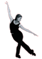
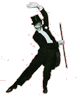

| Cursos |
|
|
| Ballet Clássico |
| O ballet clássico é uma atividade física que serve como base
para as mais diversas danças; propicia a conscientização
corporal; proporciona equilíbrio entre corpo e mente e
aumenta a auto-estima e a auto-confiança.
|
|
| 
|
| Jazz |
| O Jazz é um estilo de dança essencialmente popular para as
crianças e adolescentes, ajuda a desenvolver o espírito de
equipe e formação da auto-estima. Para o físico, aumenta a
capacidade cardiorespiratória, tonifica os músculos e
corrige a postura.
|
|
| 
|
| Sapateado |
| Sapateado é uma arte visual e sonora. É um misto de ritmo,
som, técnica, movimento e estilo. É uma dança alegre que
libera o prazer de seus praticantes e faz os pés cantarem.
Este estilo de dança desenvolve a percepção musical e
melhora a coordenação motora.
|
|